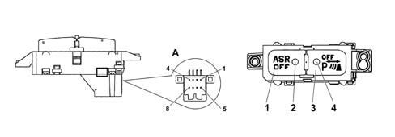

TUNNEL CONTROL PANEL
- Path
- Descriptions > 55 ELECTRICAL EQUIPMENT > 5505 INSTRUMENT/GAUGE ELECTRICAL CIRCUITS > 5505A multi-function components > TUNNEL CONTROL PANEL
- Kind
- system description
- Applies to
- all engines; all production periods
- Interactive page
- https://sloeber94.github.io/elrnDB-lThss/en/#/176401
Applies to: all engines; all production periods
There are several buttons on the tunnel control panel for activating the following functions:
- activating/deactivating ASR function
- deactivating front parking sensors.
There is a (green) LED in the button for switching off the front parking sensors that confirms whether or not it is activated, whilst the LED for the ASR button is amber.
For further information on the function operating strategies(See subassembly ) 5505 INSTRUMENT/GAUGE ELECTRICAL CIRCUITS

- 1 - Activating/deactivating ASR function button
- 2 - Activating/deactivating ASR function LED
- 3 - Front parking sensors activting/deactivating button
- 4 - Front parking sensors activting/deactivating LED
Connector A PIN OUT
PIN | FUNCTION |
|---|---|
1 | + ASR on/off |
2 | earth |
3 | parking sensors on/off |
4 | + parking sensors LED |
5 | ASR LED |
6 | + lighting |
7 | + fuse 49 switching off ASR/LED |
8 | Not connected |